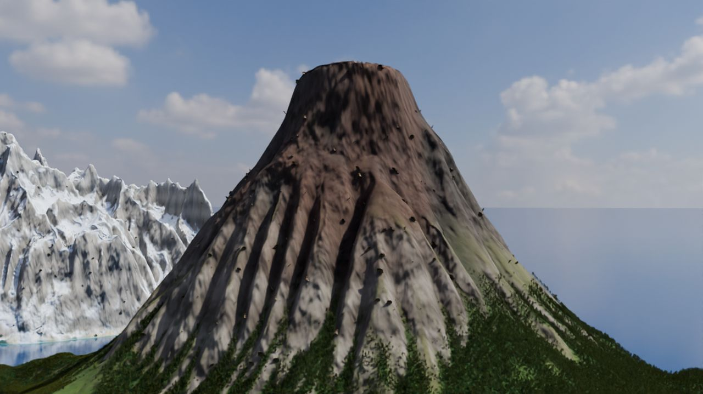
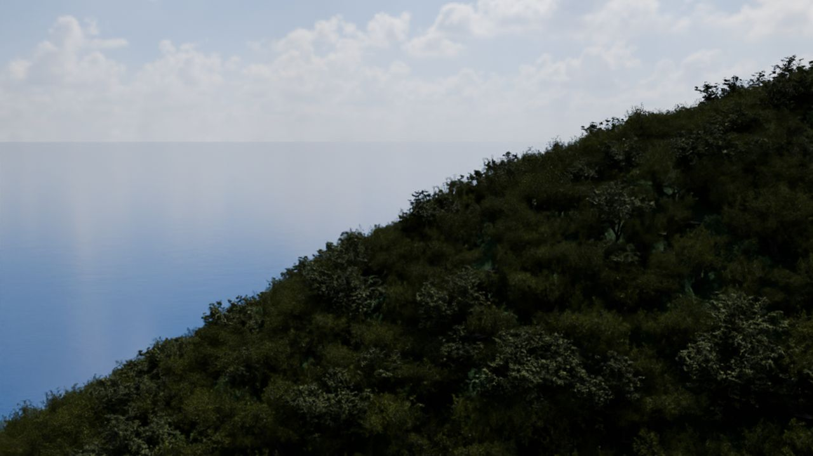
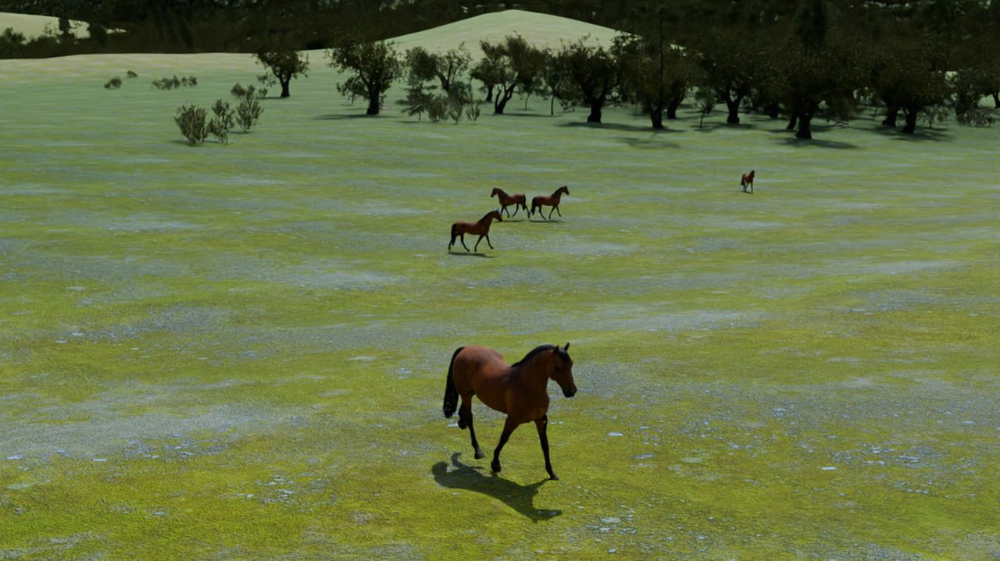
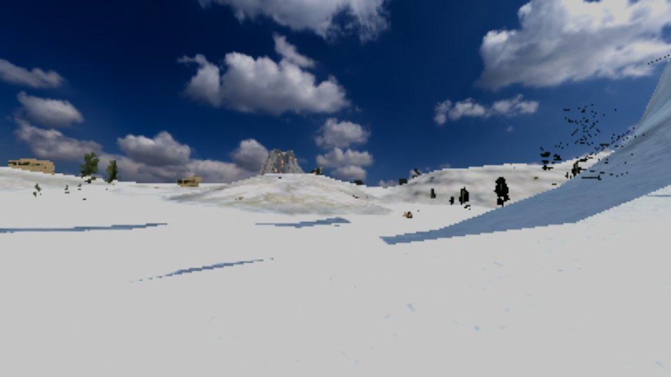
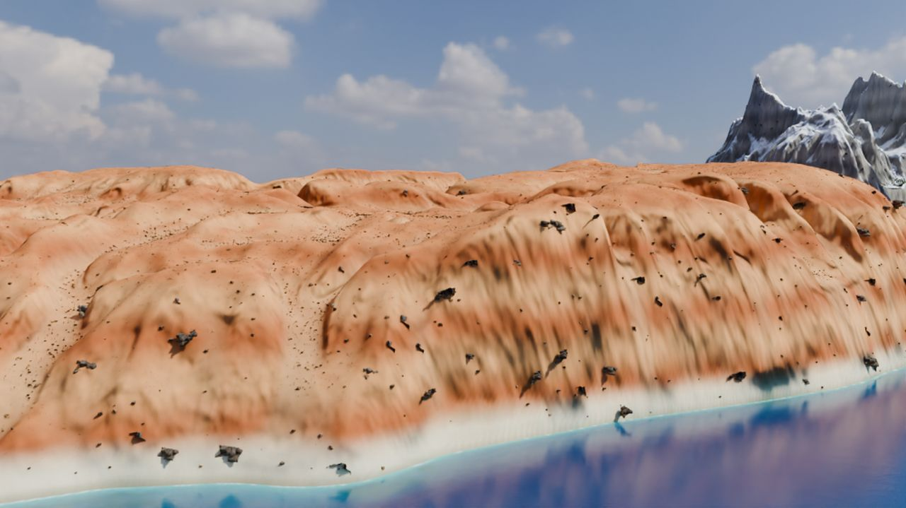

Cómo instalarlo
- Tocá Descargar APK. Si el navegador avisa que el archivo "puede ser dañino", elegí Descargar de todos modos: pasa con cualquier APK que no viene de la Play Store.
- Cuando termine, abrí Isla.apk desde la notificación o desde la carpeta Descargas.
- Android va a pedir permiso para instalar apps de origen desconocido desde el navegador o el gestor de archivos. Activalo solo para esa app y volvé atrás.
- Tocá Instalar y abrí Isla. Arranca horizontal y a pantalla completa.
Qué hay en la isla
400 km²de mapa, ~190 km² de tierra
1,2 Márboles, arbustos y rocas
3 067animales que reaccionan
30especies por bioma
2,6 kmde altura máxima
Capturas





Controles
| Acción | Celular | PC |
|---|---|---|
| Moverse | pulgar en la mitad izquierda (joystick flotante) | W A S D o flechas |
| Cámara | arrastrar en la mitad derecha · dos dedos: zoom | clic y mover el ratón · rueda: zoom |
| Correr | botón Correr | Shift |
| Saltar | botón Saltar | Espacio |
| Volar | botón Volar, ▲ / ▼ para subir y bajar | F, con E / Q |
| Bucear | en el agua, ▼ para sumergirse y ▲ para subir | Q / E |
| Pausa y ajustes | botón II o Atrás | Esc |
También funciona con mando (Xbox, PlayStation y similares).
Otras descargas
El APK está firmado con una llave de pruebas: sirve para instalarlo a mano, no viene de la Play Store.
Huella SHA-256 del archivo:
2026f8903cb76ade35c1c1581eb104d39f5ca4618bc0249c8f238a73113f7315